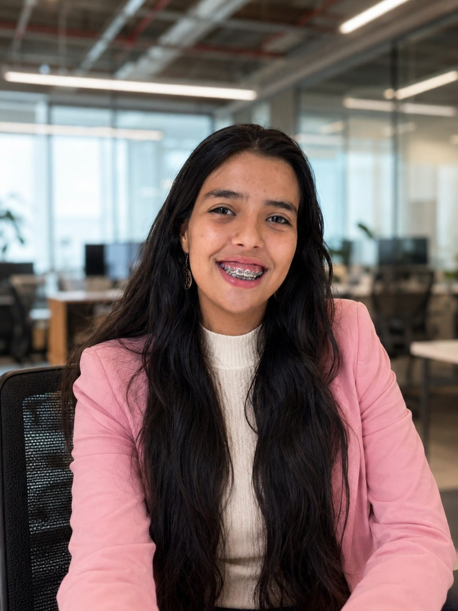

Core Architecture / V01
Software Engineer & AI Builder
Desenvolvedora em formação pela FIAP, apaixonada por criar aplicações modernas com JavaScript, Python, React, Next.js e Inteligência Artificial. Transformo ideias em produtos digitais funcionais, elegantes e escaláveis.

MARIA EDUARDA ACYOLE
STATUS: SOFTWARE_ENGINEER_STUDENT
Sou Maria Eduarda Sousa Acyole de Oliveira, estudante de Engenharia de Software na FIAP e desenvolvedora apaixonada por tecnologia, dados e inteligência artificial.
Tenho experiência prática em projetos de desenvolvimento web, dashboards analíticos, aplicações com Next.js, React, Supabase, Node.js e Python, além de projetos de IoT e automação. Meu objetivo é construir soluções que unam engenharia, design e experiência do usuário, criando produtos digitais modernos, úteis e escaláveis.
FIAP — Engenharia de Software
2025–2029 · FULL STACK, ARQUITETURA, IA, CLOUD E DADOS
Campinas, São Paulo — Brasil
DISPONÍVEL PARA REMOTO, HÍBRIDO E OPORTUNIDADES EM TECH
FULL STACK / SPORTS TECH
Plataforma desenvolvida em Next.js, React, TypeScript, Supabase e PostgreSQL para conectar atletas, equipes e organizadores de eventos esportivos.
Next.js • React • TypeScript • Supabase • PostgreSQL
DATA / COMPLIANCE
Visualização e análise de inventário de dados, matriz de riscos e indicadores de conformidade.
JavaScript • HTML • CSS • Chart.js • XLSX
IOT / EMBEDDED
Monitoramento inteligente com sensores, ESP8266, Arduino e integração MQTT para coleta e transmissão de dados em tempo real.
Arduino • ESP8266 • MQTT • Sensores • IoT
DATA SCIENCE / IA
Projeto acadêmico voltado para análise de dados espaciais e monitoramento utilizando bases do INPE e conceitos de ciência de dados.
Python • Análise de Dados • IA • Visualização
Desenvolvimento de projetos full stack, dashboards, aplicações com Next.js, React, Supabase, Node.js, Python e Inteligência Artificial.
Principais Resultados
Atuação em ambiente corporativo, organização de processos, comunicação profissional e desenvolvimento de competências técnicas e analíticas.
Foco Principal
Estou aberta a oportunidades de estágio, desenvolvimento júnior, projetos freelance, colaboração em produtos digitais e iniciativas envolvendo IA, dados e desenvolvimento web.
GitHub
Disponibilidade
Brasil (UTC-03) | Remoto ou Híbrido